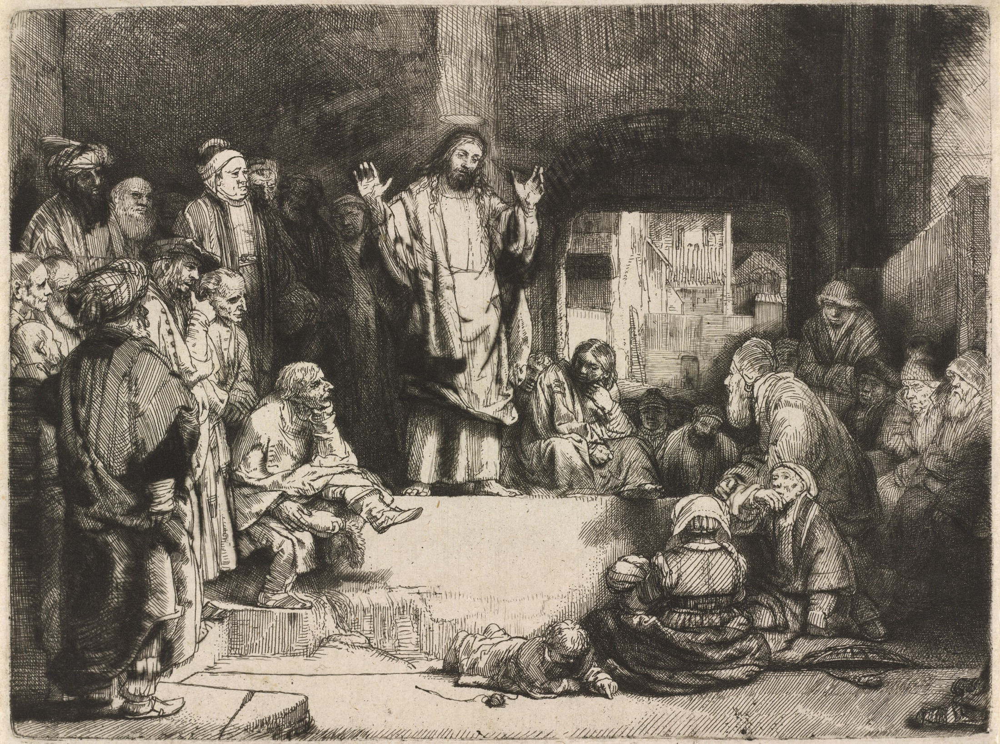

If you love me
Welcome to the
II Commandments
of Jesus
The Law and the Prophets
In the Old Testament there are five books of the Law,
four major prophets and twelve minor prophets.
Jesus was asked which commandment is the greatest.
Draft copy — the founder’s narrative replaces this.
All of the Law and the Prophets hang on these two commandments
Jesus said
CSB is the founder’s default — it needs a license. Public-domain versions for now.
The two commandments
A side track
Love fulfills the Law
Eight more places the same thread runs through — Paul, James, John.
Share
II Commandments
Placeholder mark — the official logo replaces this; the layers stand in for the designers’ work (Rosselli · Tissot · Rembrandt)